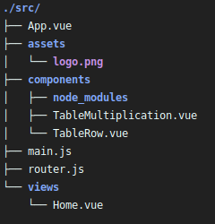
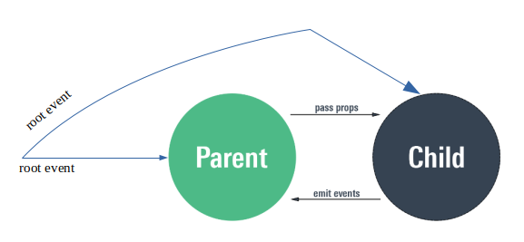
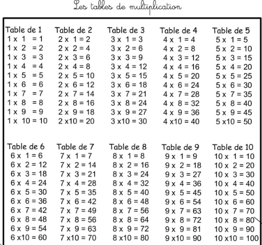

Présentation

Vue est un framework JavaScript relativement bien documenté (https://fr.vuejs.org/index.html), facile d’accès et performant, centré sur la notion de composant réutilisable, testable et maintenanble.
Crée en 2013 par Evan You (ancien ingénieur développeur chez Google - Angular)
Pour réaliser les travaux pratiques, vous aurez besoin d’aller plus en profondeur sur la connaissance des composants. La documentation Vue.js est accessible ici : https://fr.vuejs.org/v2/guide/index.html
TP introduction : composants avec Vue.js
Introduction
L’exercice de programmation que l’on vous propose a pour objectif de vous permettre de consolider les premiers concepts présentés dans la page d’introduction de Vue.js.
Prérequis
Avoir étudié/réalisé les instructions/exemples des ressources :
-
Environnement de travail, création d’un projet (sur l’intranet), premiers exercices incluant le routing.
-
Chapitre introduction du guide de Vue.js : https://vuejs.org/v2/guide/index.html, en particulier la notion de composant.
Objectif
On souhaite concevoir une application web qui affiche une table de multiplication (1 à 10 ou 13), selon une valeur soumise par l’utilisateur.
Une table de multiplication affiche dans les lignes et colonnes le résultat de la multiplication des petits nombres entiers naturels. Le terme usité du Moyen Âge au XVIe siècle était « livret ».
https://fr.wikipedia.org/wiki/Table_de_multiplication
| Le système de numération décimale de position permet d’effectuer la multiplication de deux nombres quelconques à l’aide de la seule connaissance des produits des nombres de 0 à 9 entre eux. C’est à l’école primaire que s’effectue l’apprentissage des tables qui récapitulent tous ces produits. La tradition a longtemps exigé la connaissance des tables de multiplication portant jusqu’à 12 ou 13 au lieu de 9. (source : wikipedia) |
Le squelette du projet
Le projet est livré avec des composants de portée de pages (liées à des routes), dans le dossier views, et des composants
exploités par ces vues (dossier components).

Source du projet : https://github.com/sio-melun/table-multiplication
Votre rôle consiste à poursuivre la conception de cette application structurée à base de composants.
Composant mono fichier (extension .vue)
Un composant Vue est structuré de la sorte :
<template> … </template>
<script> … </script>
<style> … </style>
Un composant a son propre cycle de vie. Il sera created, compiled, attached or detached, et finalement destroyed. À chacune de ces actions, un événement est déclenché (event) qui peut faire l’objet de traitement particulier par le composant ( hook functions). Voir à ce sujet https://alligator.io/vuejs/component-lifecycle/.
Communication inter-composants
Avec Vue.js, la communication entre composants s’opère de 3 façons (hors Vuex)
-
Communication Parent vers Enfant (via
props). -
Communication Enfant vers Parent (via
this.$emit). -
Communication entre n’importe quel composant (via
this.$root.$emit).

À cela, ajoutons :
-
le passage de valeurs dynamiques à une vue, via sa route associée. À étudier ici : https://router.vuejs.org/guide/essentials/dynamic-matching.html#reacting-to-params-changes avec l’exemple associé : https://jsfiddle.net/yyx990803/4xfa2f19/
Travaux à réaliser
Durée moyenne : 2h à 4H
Le composant TableRow.vue est prêt à l’emploi (sauf si vous souhaitez l’adapter à votre goût).
Le composant TableMultiplication.vue est incomplet. Il vous incombe de le terminer, le but étant de lui faire afficher une table de multiplication sur la base d’une valeur soumise par l’utilisateur (1 à 10 ou 13).
Home (dans views)
`-- TableMultiplication (dans components)
`-- TableRow (dans components)Exemple de table de multiplication :
Entrez un nombre : 1
Analyse
Identification des composants.
-
Home.vue: Le composant intégré à la page d’accueil (composant principal App.vue) qui interagit avec l’utilsateur -
TableMultiplication.vue: La table de multiplication (présentation du titre et des lignes) -
TableRow.vue: Ligne d’une table (représentation d’une ligne)
On aura compris que le composant TableMultiplication devra itèrer avec le composant TableRow.
Dans le respect de l’analyse ci-dessus, poursuivre la programmation de cette application.
Exemple du composant de vue Home.vue :
<template>
<div>
<br>
<label for="user-input"> Entrez une valeur : </label>
<input id="user-input" type="text" v-model="n">
<p>
<small style="font-style:italic;">(val n = {{n}})</small>
</p>
<TableMultiplication v-bind:n="parseInt(n)"/>
<hr/>
</div>
</template>
<script>
import TableMultiplication from "../components/TableMultiplication.vue";
export default {
name: "home",
data: function () {
return {
n: 7
};
},
components: {
TableMultiplication,
}
};
</script>
<style> ... </style>Le composant de page Home.vue utilise le composant TableMultiplication.
Dans ce modèle de programmation, les composants, qu’ils soient de page ou non,
sont dits "mono-fichier", c’est à dire définis dans des fichiers à part, d’extension .vue par défaut.
Ces composants sont rangés, selon leur portée, dans les dossiers views ou components (voir Style guide - fichier-composants-fortement-recommande)
La suite
-
On souhaite que la route
tables, puisse être liée à une nouvelle page de vue (à créer dans le dossierviews) qui affiche la table des tables de multiplication de 1 à 10 ou 13 (prévoir cette option). Exemple.

Nous nommerons ce nouveau composant LesTablesMultiplication, qui utilisera le composant TableMultiplication (prévoir une itération)
-
À vous de proposer, sur ce même thème, une autre évolution !